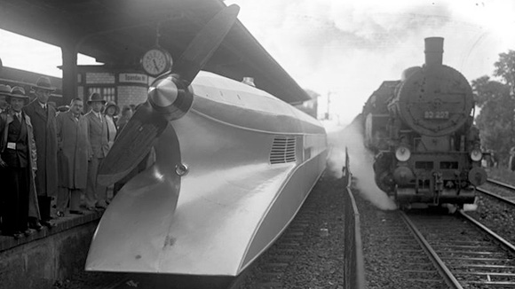
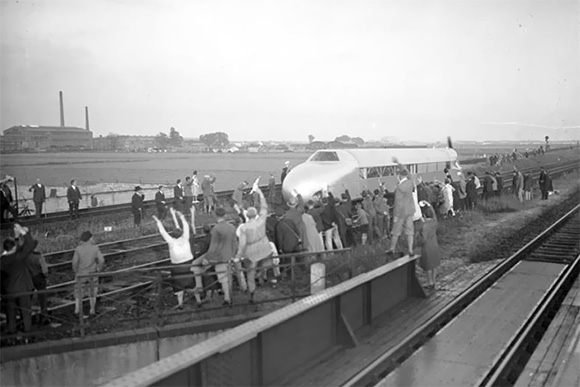
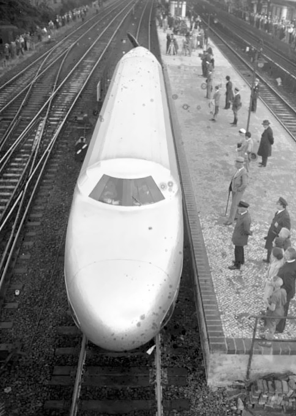

Такой железнодорожный цеппелин мог бы стать прорывом в скорости железнодорожного сообщения.
Его в 1930 году построила немецкая железнодорожная компания Deutsche Reichsbahn. Самоходный вагон был оснащен 46-литровым 12-цилиндровым двигателем. Так как конструкторы вдохновлялись при создании популярными тогда дирижаблями, в движение цеппелин приводился с помощью огромного пропеллера в задней части. Его корпус был целиком выполнен из алюминия.
Мотор в 600 лошадиных сил мог разгонять поезд до скорости 225 километров в час, что для тех времен выглядит совсем фантастическим.


